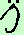

|
Indicheremo il montante di una rendita con il simbolo  (lettera s in corsivo) (lettera s in corsivo)Indicheremo il Valore attuale di una rendita con il simbolo  (lettera a in corsivo) (lettera a in corsivo)Per indicare la rata anticipata metteremo sopra il simbolo due puntini (il nome preciso e' dieresi) e lo chiameremo anticipato (va letto prima di tutti gli altri simboli successivi) Esempio:  leggeremo s anticipato Per indicare il numero n dei periodi li scriveremo sotto il simbolo ¬ e lo leggeremo figurato mentre di fianco indicheremo il tasso i Esempio:  leggeremo a figurato n al tasso i leggeremo a figurato n al tasso iSe i periodi della rata non sono immediati ma l'inizio e' spostato nel tempo di p anni, scriveremo p seguito dal simbolo / e leggeremo differito p Esempio:  leggeremo a anticipato differito p figurato n al tasso i leggeremo a anticipato differito p figurato n al tasso i |